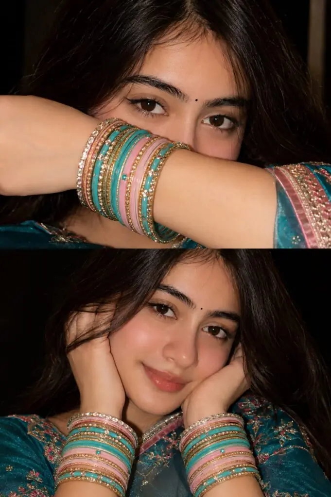

Creating realistic portrait collages with AI has become one of the most popular trends in digital photography and social media content creation. A well-written portrait collage prompt helps generate stunning images with natural beauty, detailed facial features, realistic lighting, and professional fashion-magazine quality results.
Whether you are creating Instagram content, personal portraits, or beauty-themed artwork, the right prompt can make a huge difference. It helps AI understand details such as clothing, accessories, poses, skin texture, camera settings, and overall mood.
In this article, you will find a realistic beautiful portrait collage prompt for girls designed to create high-quality, ultra-realistic images with elegant styling, natural expressions, and a premium editorial look.
Want more awesome prompts?
Join our community and get the latest viral prompts daily.
Follow on Instagram


A realistic portrait collage prompt is the key to generating beautiful and professional-looking AI images. By including detailed descriptions of appearance, clothing, lighting, camera settings, and composition, you can achieve more natural and visually appealing results.
The best prompts focus on realism, authentic beauty, and fine details rather than excessive editing or artificial effects. This creates images that look closer to real photography and stand out on social media platforms.
Use the prompt shared in this article as a foundation and customize it to match your preferred style, colors, and creative vision. With the right adjustments, you can create stunning portrait collages that look elegant, realistic, and eye-catching.